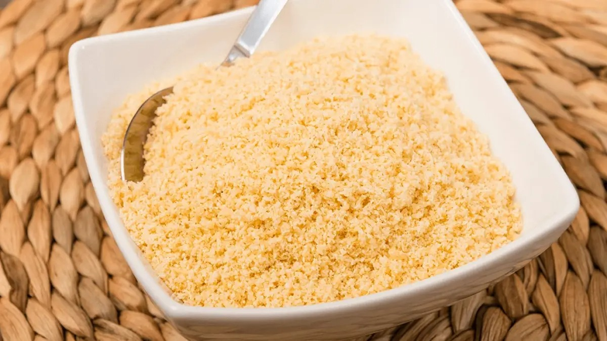

Farofa

Description
Farofa is a traditional Brazilian side dish made with toasted yuca flour/cassava flour, or how we call it in Portuguese farinha de mandioca. This dish is mainly eaten in Brazil or by the Brazilian diaspora and it's normally available in Brazilian restaurants all over the world.
Ingredients
- 2 thick strips of bacon diced
- 2 tbsp of butter cold
- 1/2 onion diced
- 2 cloves of garlic minced
- 1 c of white yuca/cassava flour
- salt and pepper to taste
Steps
- Add the bacon to a cold skillet, and heat up over medium heat
- When the fat from the bacon begins to melt, add 1 tbsp of butter
- When the bacon begins to fry, add the second tbsp of butter
- Add the onions and sautee until transparent, about 2 mins
- Add the garlic and fry until golden
- Add the yuca flour and season with salt and pepper to taste
- Let it toast, stirring gently and constantly to avoid burning, about 2 mins